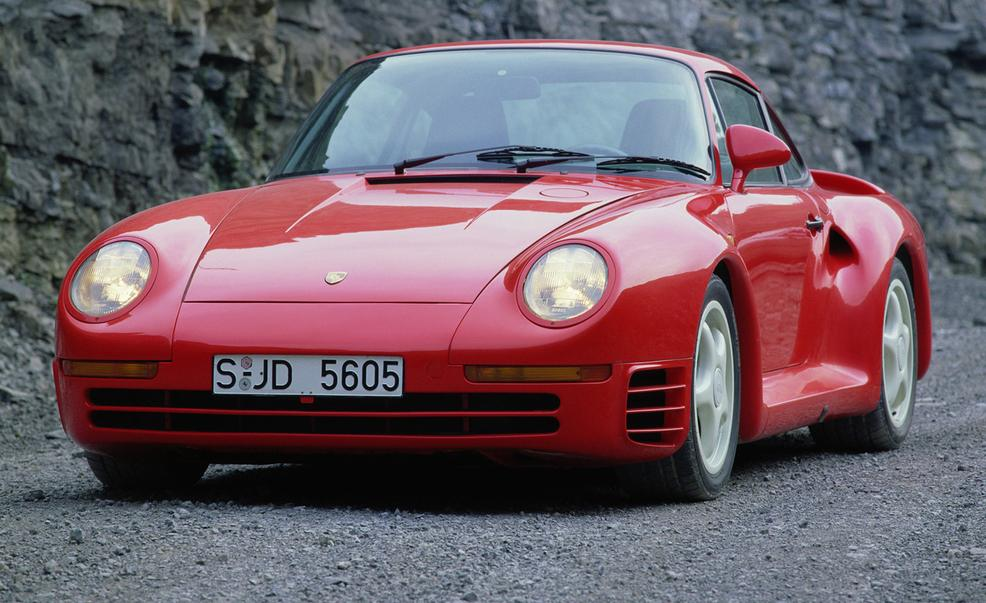
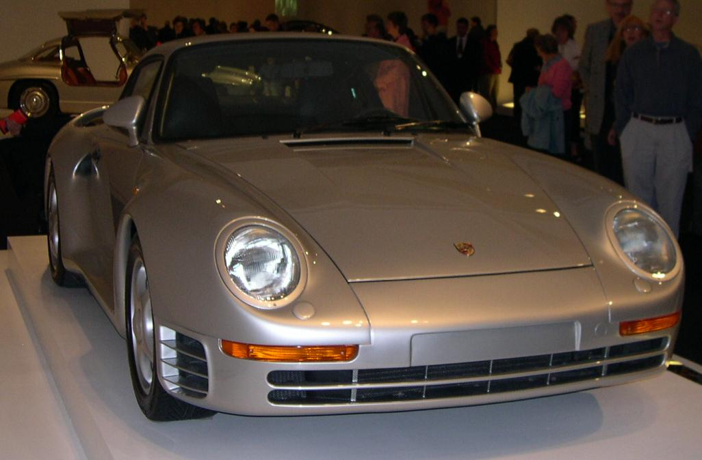
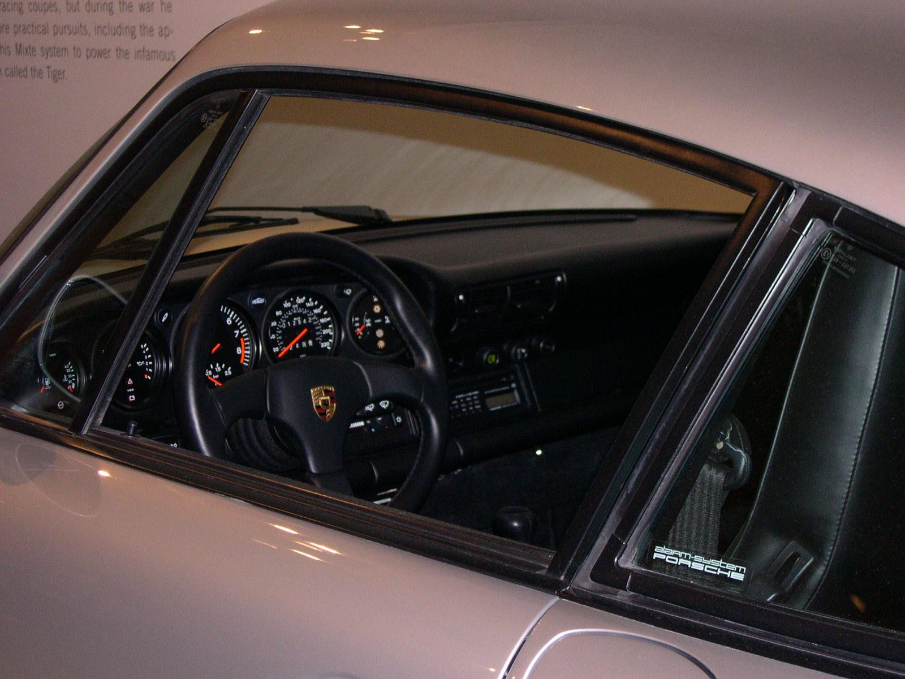
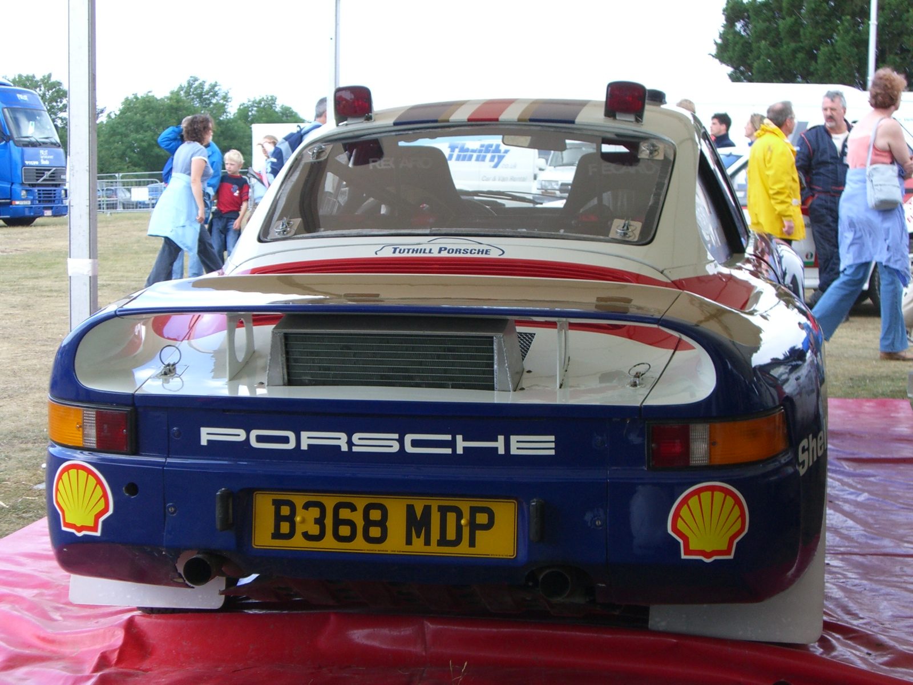
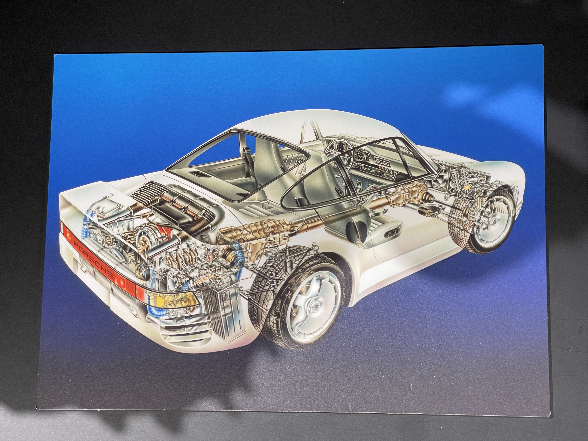
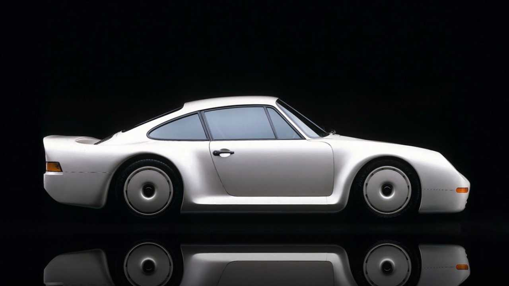
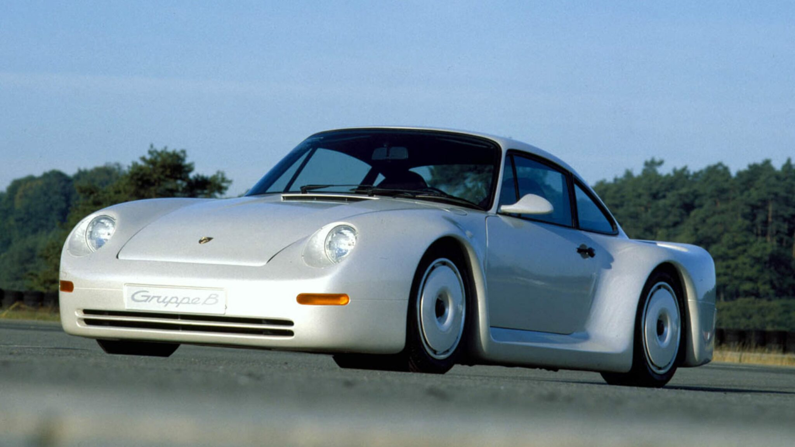
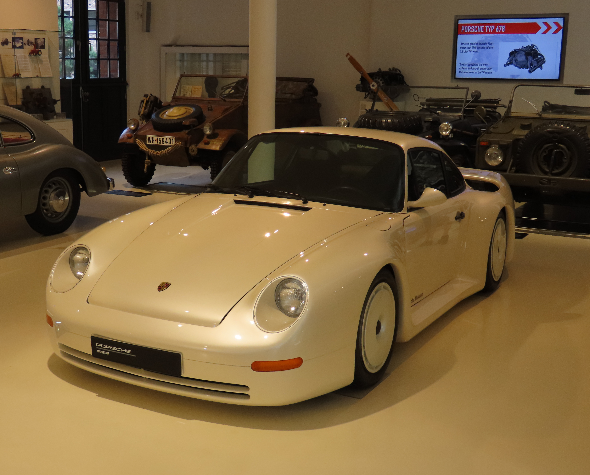

Primary Source


Secondary Source

Magazine and Press Coverage


Designers, Builders, and Owners






Source: see citation
Design and Engineering



Launch and Motor Shows





Notes
- Csere, Csaba. "1987 Porsche 959 Archived Test." Car and Driver, November 1987.
- Csere, Csaba. "1987 Porsche 959 Archived Test." Car and Driver, November 1987. Photograph via Hearst archives.
- Csere, "1987 Porsche 959 Archived Test."
- Kimble, David. Porsche 959 Cutaway Illustration. Originally published in Motor Trend, September 1985. Republished as Kimble, "Cutaway Classic: Explore the Amazing Porsche 959." Motorsport.com, June 8, 2016. https://www.motorsport.com/automotive/news/cutaway-classic-explore-the-amazing-porsche-959-745046/745046/.
- Valder137. Porsche 959 1986 Paris-Dakar Rothmans Racer. Photograph. 2013. Wikimedia Commons. CC BY 2.0. https://commons.wikimedia.org/wiki/File:Porsche_959_1986_Paris_Dakar_Racer_Rothmann_Racing_LFrontSide_PorscheM_9June2013_(14989626056).jpg.
- Car and Driver, Porsche 959 Road Test Photograph, November 1987, via Hearst archives.
- Car and Driver, Porsche 959 Studio Photograph, 1987, via Hearst.
- Uncredited. 1988 Porsche 959 Komfort, Ralph Lauren Collection. Photograph. Wikimedia Commons. CC BY-SA 3.0. https://commons.wikimedia.org/wiki/File:Porsche_959_34_left.jpg.
- Uncredited. 1988 Porsche 959 Interior, Ralph Lauren Collection. Photograph. Wikimedia Commons. CC BY-SA 3.0. https://commons.wikimedia.org/wiki/File:Porsche_959_interior.jpg.
- Valder137, Porsche 959 1986 Paris-Dakar Rothmans Racer, Porsche Museum, 2013, Wikimedia Commons, CC BY 2.0.
- edvvc, 1985 Porsche 959 Paris-Dakar, Flickr / Wikimedia Commons, CC BY 2.0.
- Alexander Migl, Porsche 961 (1987 Le Mans No. 203), Porsche Museum, 2020, Wikimedia Commons, CC BY-SA 4.0.
- Uncredited, 1988 Porsche 959 Komfort, Ralph Lauren Collection, Wikimedia Commons, CC BY-SA 3.0.
- Driven Car Guide (Sanchez). "Mr Bean Buys a Porsche 959, and Other Famous Owners." Driven Car Guide, Feb. 29, 2024. https://www.drivencarguide.co.nz/news/mr-bean-buys-a-porsche-959-and-other-famous-owners/.
- Rouk40130. Porsche 959 Mechanical Sketch at Stuttgart Museum. Photograph. 2024. Wikimedia Commons. CC BY 4.0. https://commons.wikimedia.org/wiki/File:959_mecanical_sketch_in_Stuttgart_museum.jpg.
- Sfoskett. Porsche 959 Engine. Photograph. 2005. Wikimedia Commons. CC BY-SA 3.0. https://commons.wikimedia.org/wiki/File:Porsche_959_engine.jpg.
- David Kimble, Porsche 959 Cutaway Illustration, Motorsport.com, June 8, 2016.
- Rouk40130, Porsche 959 Mechanical Sketch, Porsche Museum Stuttgart, 2024, Wikimedia Commons, CC BY 4.0.
- Sfoskett, Porsche 959 Engine, 2005, Wikimedia Commons, CC BY-SA 3.0.
- Porsche AG. Porsche "Gruppe B" Concept at 1983 Frankfurt IAA. Factory press photograph. September 1983. Reproduced via StuttCars. https://www.stuttcars.com/porsche-959-gruppe-b/.
- Porsche AG. Porsche 959 "Gruppe B" Concept, Rothmans Livery. Factory press photograph. 1983. Reproduced via StuttCars. https://www.stuttcars.com/porsche-959-gruppe-b/.
- leduardo. Porsche 959 Concept Car Gruppe B 1983. Photograph. 2007. Wikimedia Commons. CC BY 2.0. https://commons.wikimedia.org/wiki/File:Porsche_959_Concept_Car_Gruppe_B_1983.jpg.
- leduardo. Porsche 959 Concept Car Gruppe B 1983 (rear). Photograph. 2007. Wikimedia Commons. CC BY 2.0. https://commons.wikimedia.org/wiki/File:Porsche_959_Concept_Car_Gruppe_B_1983_(rear).jpg.
- Meskens, Ad. Porsche 959 Prototype Group B at Hamburg Prototyp Museum. Photograph. 2024. Wikimedia Commons. CC BY-SA 4.0. https://commons.wikimedia.org/wiki/File:Hamburg_Prototyp_Porsche_959_Prototype_Group_B.jpg.
- MrWalkr. 1985 Porsche 959 Prototype. Photograph. 2024. Wikimedia Commons. CC BY-SA 4.0. https://commons.wikimedia.org/wiki/File:1985_Porsche_959_Prototype_SP24.jpg.
- Migl, Alexander. Porsche 961 (1987 Le Mans No. 203) in the Porsche Museum. Photograph. 2020. Wikimedia Commons. CC BY-SA 4.0. https://commons.wikimedia.org/wiki/File:Porsche_961_(1987_24_Hours_of_Le_Mans,_No.203)_in_the_Porsche-Museum_(2009)_IMG_2761.jpg.
- Porsche AG, Porsche 'Gruppe B' Concept at 1983 Frankfurt IAA, 1983, press archive via StuttCars.
- Porsche AG, Porsche 959 'Gruppe B' Concept, Rothmans Livery, 1983, via StuttCars.
- Ad Meskens, Porsche 959 Prototype Group B at Hamburg Prototyp Museum, 2024, Wikimedia Commons, CC BY-SA 4.0.